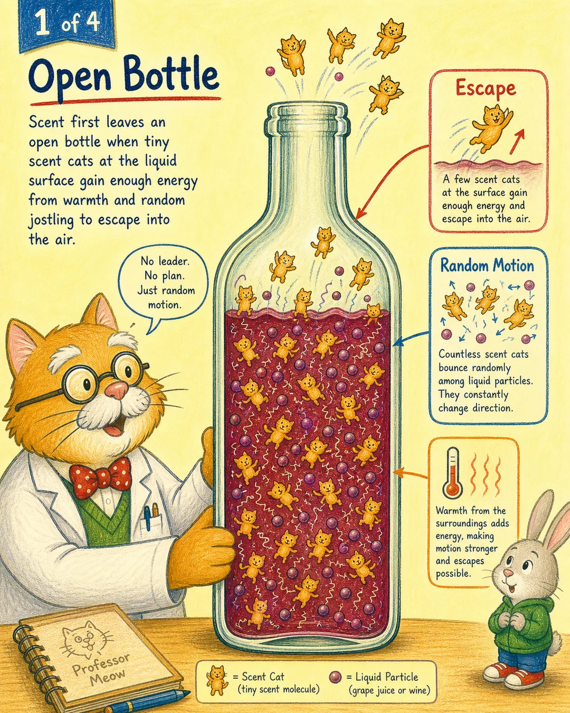
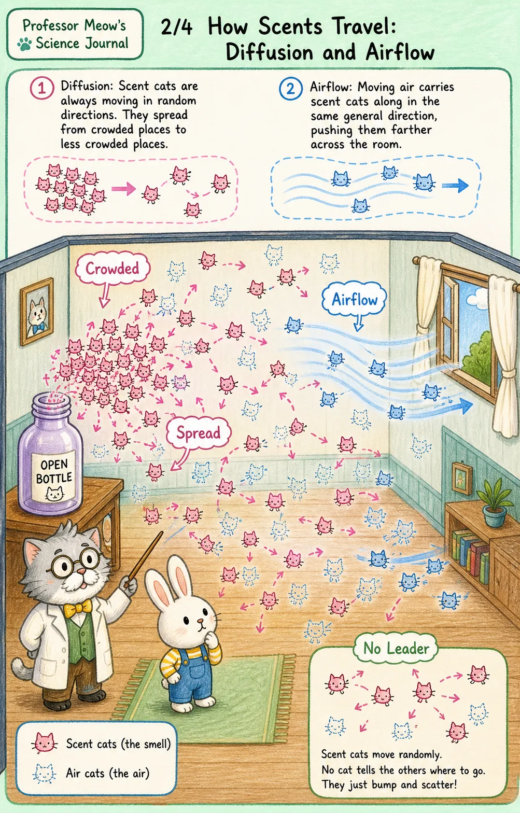
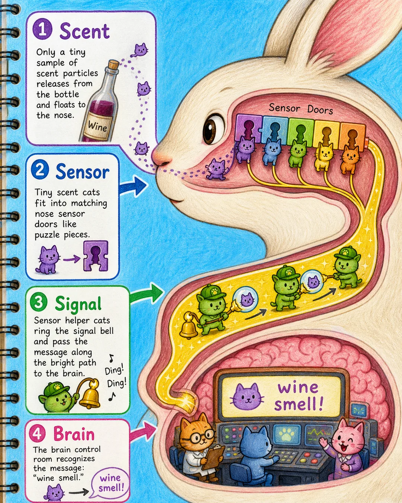
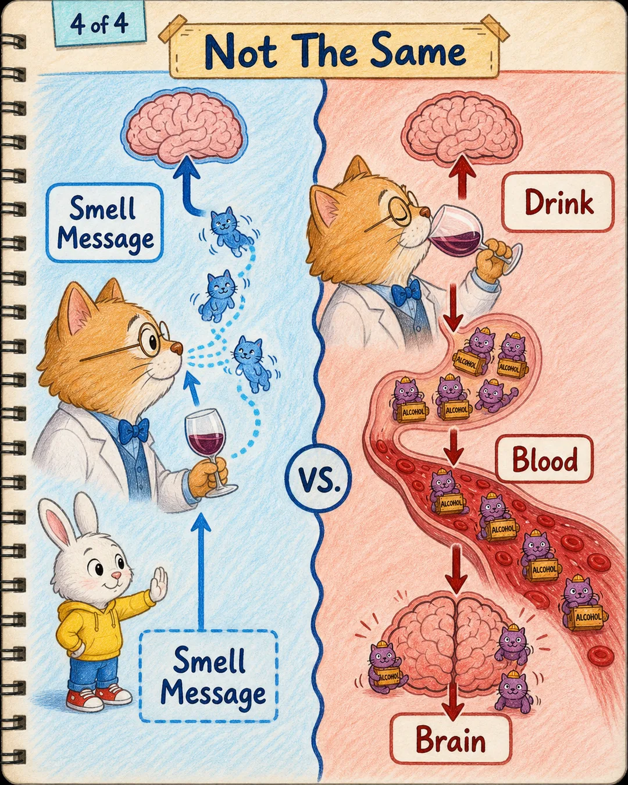
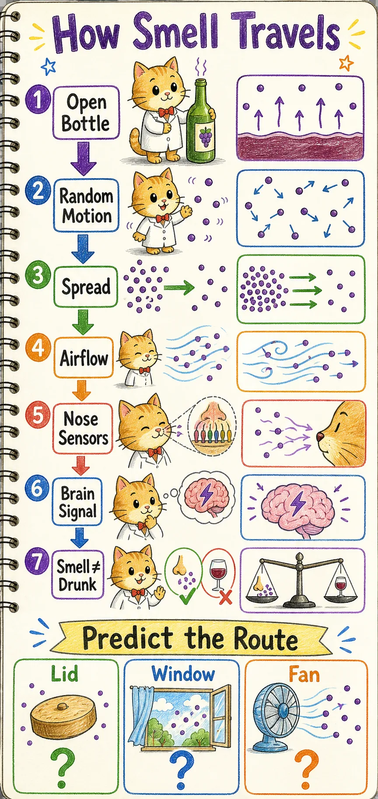

Professor Meow Notebook
爷爷的酒味，为什么会跑遍整个房间？
兔兔画出了一个很了不起的发现：有些东西明明看不见，却能从一个人身边出发，让整个房间都发生变化。
先听兔兔怎么说
“爷爷会带着酒，然后味道散出来，大家都醉了。”
兔兔没有只画一只酒瓶。他画的是味道从爷爷那里出发，又碰到了所有人。这幅画已经抓住了一件很深的事：一个很小的源头，怎么会影响到一大片地方？
可是，酒瓶没有脚，酒味为什么能跑过桌子、跑过空气，最后跑到大家的鼻子里？
在我们的世界里，那其实是……
许多没有队长的味道小猫，一直在酒里和空气里乱动。
有些味道小猫在酒面附近跳得够高，就离开酒，钻进空气。它们不是闻到了谁的鼻子，也不是商量好要去哪儿。它们只是不停地碰来碰去。瓶口附近太挤，远处比较空，于是过一会儿，整个房间里都能找到它们。
这次我们要走过一座尺度之桥：
兔兔看见
全屋有酒味
全屋有酒味
放大之后
味道小猫乱动
味道小猫乱动
许多小猫
碰撞并散开
碰撞并散开
回到房间
每个人都闻到
每个人都闻到
场景一：它们不是想出去，而是一直在动
酒里的小家伙没有排队，也没有出发命令。它们一直被周围推来撞去，其中一些从酒面跳进了瓶子上方的空气。

酒瓶打开，给了味道小猫一扇出口。温度越高，小家伙们通常动得越有力；酒面附近总有一些能跑进空气。这里最重要的不是“它们想去哪里”，而是“它们一直在动”。
场景二：没有队长，也能慢慢散开
刚离开瓶子时，味道小猫都挤在瓶口附近。它们不断和空气小猫碰撞，有的向左，有的向右，有的又折回来。

单看一只小猫，它的路线乱七八糟；可是把许多只放在一起看，就出现了一个大规律：挤的地方会慢慢变松，空的地方会慢慢出现味道。风还会把一整群小猫带向同一个方向，所以窗户和风扇都能改变它们的路线。
场景三：鼻子只收到一小份消息
跑遍房间的味道小猫中，只有很少一部分碰巧来到兔兔鼻子旁边。鼻子里有许多形状不同的感应门。

合适的味道小猫碰到合适的门，感应员就把消息送给大脑。大脑把这份消息认出来：“这是酒味。” 我们闻到的是一份从鼻子送来的消息，不是整瓶酒跑进了身体。
场景四：闻到了，和醉了，是两条路
兔兔把“酒味来了”和“大家醉了”画在一起，这个感觉特别有力量。不过喵博士还发现，两件事虽然挨得很近，走的路却不同。

闻到酒味，主要是鼻子把气味消息交给大脑。真正喝下足够的酒，酒精才会从身体里进入血液，再影响大脑。平常闻见爷爷带来的酒味，并不等于自己也喝了酒、醉了。酒是大人的饮品，兔兔只负责追踪味道小猫。
现在，这群小猫可以帮我们猜未来
- 盖紧瓶盖：出口关上，能跑进房间的味道小猫会少很多。
- 打开窗户：气流会改写路线。味道可能先经过某个人，再被带到屋外，最后慢慢变淡。
- 打开风扇：风扇不会把味道变没，只会让它们换方向、走得更快。有些地方反而会更早闻到。
兔兔探险家的新任务：请画三个房间，分别放进“瓶盖、窗户和风扇”。哪一群味道小猫最容易迷路？哪一群会最快跑到你的鼻子？喵博士还不知道答案，要等你的路线图。
喵博士的因果路线图
从打开酒瓶，到大脑认出味道，每一只小猫都在做一件有原因的事。

可以直接发给兔兔
兔兔，我一直在看你画的那些黑线和蓝线，忽然发现了一个特别奇怪的问题：
爷爷的酒瓶明明没有脚，酒味为什么能跑过桌子、跑过空气，最后跑到每个人鼻子里？
喵博士发现，酒里可能住着许多没有队长的味道小猫。它们一直乱跑、碰撞，挤的地方慢慢变松，空的地方慢慢也有了它们。
可是喵博士还不会画三种路线：盖上瓶盖、打开窗户、打开风扇以后，它们分别会怎么跑？你能画给我看吗？